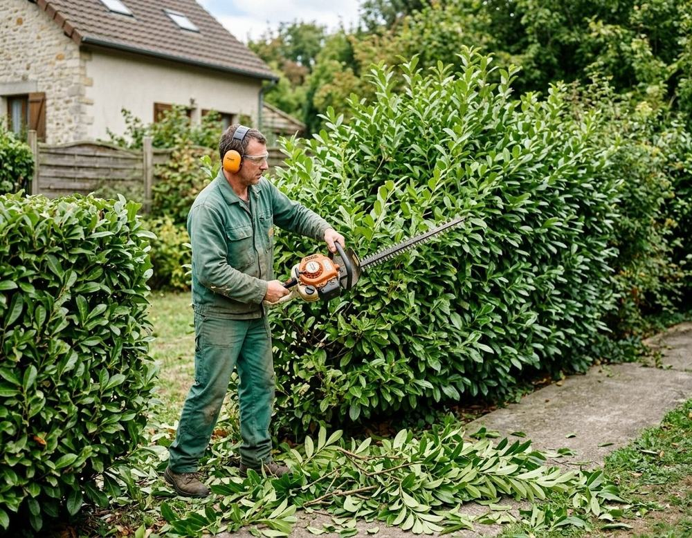
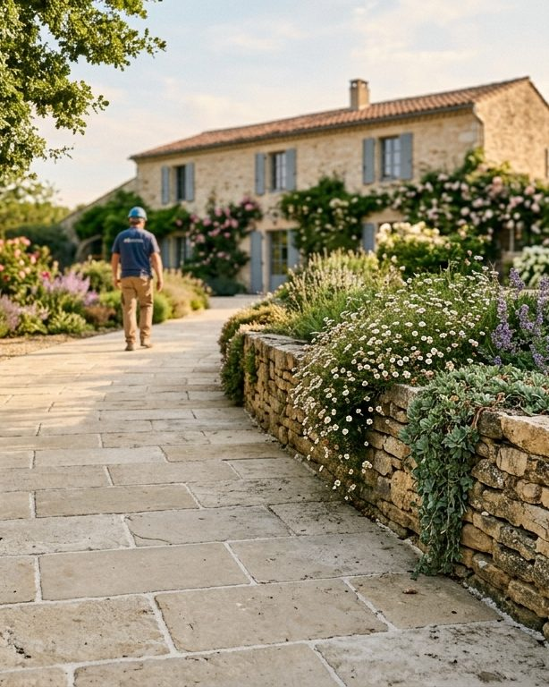

Paysagiste à Chatou (78)
Création et entretien de jardins à Chatou
Kemo Fofana aménage et entretient les jardins à Chatou, dans les Yvelines. Parlez-lui de votre projet.
- Entreprise basée à Chatou
- Création et entretien de jardins
- Devis par téléphone ou en ligne
Nos prestations
Des prestations pour votre jardin
Création, plantations, entretien : choisissez ce dont votre jardin a besoin.

Création de jardins
Création de massifs, d'allées et de pelouses, adaptée à la forme de votre terrain et à vos envies.
En savoir plus →
Plantations
Choix et mise en terre d'arbres, d'arbustes et de vivaces pour structurer et fleurir votre jardin.
En savoir plus →
Entretien
Tonte, désherbage et ramassage des feuilles pour garder un jardin net au fil des saisons.
En savoir plus →
Taille de haies
Taille des haies et des arbustes pour des lignes nettes et des végétaux en bonne santé.
En savoir plus →
À propos
Un paysagiste à Chatou
Kemo Fofana est paysagiste à Chatou, dans les Yvelines. Son entreprise aménage et entretient des jardins.
Pour parler de votre projet, appelez directement ou envoyez une demande depuis la page de contact.
Un projet de jardin ? Parlons-en.
Décrivez votre projet par téléphone ou depuis le formulaire de contact.